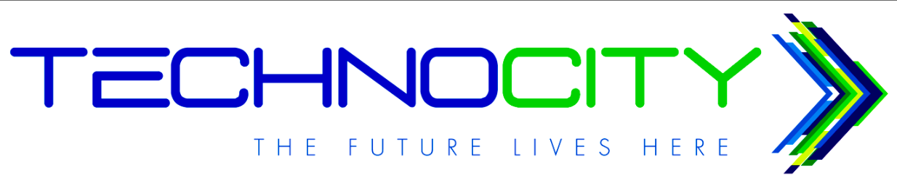

A second generation technology entrepreneur who has been working with internet startups as a volunteer, employee, founder, investor and mentor for almost 20 years. He believes the Internet revolution belongs to the youth and has been in India the past 7 years exploring how to help young people here create technology enabled businesses.He is also the cofounder of Jaaga, a Bangalore-based company aimed at helping developing countries build core infrastructure from pallet racks -- easily-assembled, heavy-duty warehouse shelving components, a fine example of how to re-purpose material and re-examine the definition and role of architecture.
Session 2
Jithin Krishnan graduated from Sacred Hearts College,Thevara and did his postgraduation from the Asian College of journalism,Chennai. He was the subeditor of The Hindu and is now the Director, Branding and communication at Make A Difference, in his pursuit to catalyse changes in the lives of underprivileged children in India. Through Make A Difference, he, along with the youth volunteers of the organization, taught thousands of kids to dream beyond their limitations and made their lives better and happier.
Session 2
Dr.NT Nair dedicated his life to promote science in the society and inspire young minds to become what they aspire and to enjoy what they achieved. He is the Chief Editor & Publisher of ‘Executive Knowledge Lines’ which is an excellent interpretation of technical development across the globe and india. . EKL is targeted at executives, academics, students and elite public, serving them with knowledge capsules.He has great insights on how R&D should develop in India, and how it can benefit the system and young innovators and reduce their migration to west and all. He was one of the pioneer in developing India 's first electronic attendance marking system , under the RnD team of KELTRON.
Session 1
Having been initiated into the realm of performing arts at a very tender age, Nanditha was fortunate to have been raised in a creative environmentcompleted her masters in English literature from Mahatma GandhiUniversity, Kerala. Knowledge of classical music, being a crucial asset for an Indian classical dancer, she also acquired the Ganabhushanam degree from RLV music academy in Kerala. Nanditha signed up as a student of Dr. Padma Subrahmanyam and graduated to the advanced Nrithyashali course. Traveling to various countries like Japan, Taiwan, South Africa and U.S.A, she served as an able ambassador of Indian culture and ethos and ventured to promote Indian classical dance and Yoga wherever she went and reached out to diverse audiences. Nanditha also completed a PG Diploma in Arts Management from the Madras Craft Foundation Institute of Arts Management. She founded Aradhana Sabha, a not for profit organization that aims to nurture art among the residents of Adambakkam, Chennai where she currently resides. She is also the founding partner of "Mythri", a centre for arts, which offers classes in Dance, Music, yoga.
Session 1
Paul Kronengerg is the cofounder of Kanthari, International Institute for Social Entrepreneurs.which focuses on empowerment of individuals who have overcome adversity. Before starting kanthari, Paul and his partner Sabriye Tenberken (German) had set up the organisation Braille Without Borders. BWB has been active in the Tibet Autonomous Region in China for the past 14 years. He is a recipient of the Albert Schweizer Award for charity work and has also been knighted by the Queen of the Netherlands. He has a technical background graduating in 4 different disciplines; mechanical engineering, computer science, commercial technology and communication system science.Paul has been a key note speaker at the Swiss Economic Forum (Interlaken) and the Festival of Thinkers (Abu Dhabi) and is a man of empathy, culture, compassion as well as intellect. Even though he has stood his ground, with fierce determination, even in the face of difficulties, Paul Kronenberg has travelled a long way in his journey to establish equality for the visually impaired and others who have faced adversity, all across the continents of the world.
Session 1
He is the chief executive officer and co-founder of Kochi-based MobMe Wireless Solutions, an innovative mobile value-added services company, one of the most successful start-ups in the telecommunications sector in India, the first college start-up in Kerala to be successfully incubated through a Government-funded Technology Business Incubator (at Technopark). Since April 2012, when MobME tied up with the Department of Science and Technology, Government of India, and Technopark to set up Startup Village in Kochi, India’s first public–private partnership telecom incubator, Sanjay has also become a full-fledged ‘angel’ – a friend, philosopher, guide and investor – to many a student entrepreneur. He believes that a simple idea can transform lives and through his endeavours , has proved that innovation is the key to success.
Session 2
P H Kurian is currently the Principal Secretary, IT, Government of Kerala. An officer of 1986 batch of Indian Administrative Services (IAS), He was the Controller General of Patents, Designs and Trademarks prior to his present role and issued the first-ever compulsory licence in India for the manufacture of a drug still under patent thus taking on global patents system to make a very costly drug affordable for the poor. As Industries Secretary and IT Secretary, he has successfully negotiated many infrastructure projects in the Public-Private Partnership (PPP) mode, which includes the smart city at Cochin and many other projects of Kerala Industrial Infrastructural Development Corporation. He has also visited more than 20 countries either as leader or as member of national and state business delegations.
Session 1
Pulluvan pattu is one among the many traditional ritualistic art forms of Kerala. The word meaning of pullu is 'bird of omen' and pulluvan 'a person who predicts from the sound of birds'. The pulluvars worship the snake god or nagas. Pulluvan pattu is sung during poojas and uthsavs in snake grooves or serpent temples. Pulluvan veena, a one stinged violin and pulluvan kuttam, an earthern pot with a string attached and thallams, bell metal cymbals are the simple instruments made by the pulluvars to add vibrance to their enchanting vocals.
Session 1
Mr Praveen is presently the Chief architect of PirateParty of India. He is also the Volunteer and lead developer at SMC Swanthanthra Malayalam Computing. He also leads the chaamba project and is a Debian DD - The completely free universal operating system.
Session 2
VKM is one of the leading Kalari schools of Kerala and is giving training in both Northern and the Southern systems of Kalaripayattu. This may perhaps be only Kalari of this type in Kerala blending both systems. Here, training is given in a Kalari constructed according to the time honored principles of the Kalari traditions and according to accepted methods of worshipping the Kalari Gods and Guru, and performing the necessary rituals. VKM Kalari Sangham is affiliated to the Kerala Kalaripayattu Association [Govt. of Kerala].
Session 2

The College of Engineering, Trivandrum was established in 1939 as the first Engineering College in the then Travancore State. The institution owes its foundation to the bold and inspired vision of Sree Chithira Thirunal Balarama Varma, the then Maharaj of Travancore Ever since the inception, the College has maintained its eminence as a leading Engineering College in India. According to a study sponsored by the Department of Science and Technology, government of India, in the early ninties, College of Engineering, Trivandrum was among the to[ ten Engineering Colleges in India. The College ranks among the top in the country in the quality of its graduates and the number of top jobs held by its graduates. With such an eminence in the academic and curricular activities, the College is the most sought after Engineering College by the applicants of Engineering degree programmes in the state.
CGPU Hall, CET
Timings
Session I : 10 am to 1 pm (Refreshments : 11:30 am to 12pm)
Session II : 2 pm to 5 pm (Refreshments : 3:30pm to 4pm)
Ticket Price is Rs600 per session.
For tickets please deposit the corresponding amount to the SBT account no:67209034899
And add the details in the registration form
Back to Top
Techo city jhsfsjfgsdklfjhdlskdjfsdfjdslfjsdfdsflsjkfjsdgflksdfksdfhsdfhjhsdlkfh
 Back to Top
GEORGE JACOB-+919496334603
TEJAS SURESH KUMAR-+918089324091
ELIZABETH SAMUEL-+919497324325
Email your queries at tedxcet@gmail.com
Or reach out to us via our Facebook page
Site is under construction.. More details will be added soon...